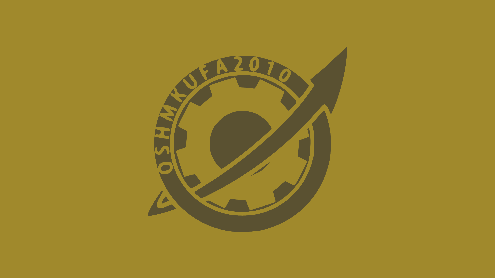

<aside class="sidebar">
    <!-- 头像 -->
    <div class="avatar">
        
    </div>
    <!-- 侧边栏项目 -->
    <ul>
        <li><a href="index.html">昊林的个人站</a></li>
        <li><a href="index.html">首页</a></li>
        <li><a href="pages/guide/guide.html">IOT项目</a></li>
        <li><a href="pages/jhnotes_guide/jhnotes_guide.html">john文章</a></li>
        <li><a href="pages/about/about.html">-关于我-</a></li>
    </ul>
    <!-- 社交链接 -->
    <div class="social-links">
        <a href="https://space.bilibili.com/1239005162" target="_blank">
            
        </a>
        <a href="https://github.com/AVA022hallo" target="_blank">
            
        </a>
        <a href="https://www.zhihu.com/people/158nbe" target="_blank">
            
        </a>
    </div>
</aside>
